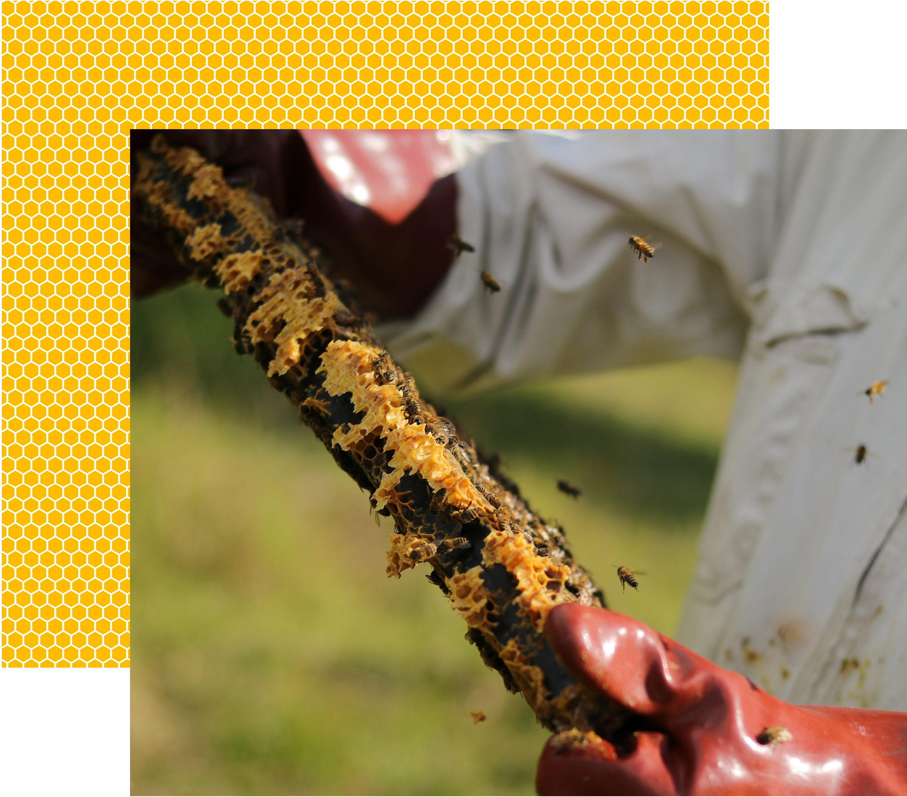

Origins
There are more than 20,000 species of wild bees.[16] Many species are solitary[17] (e.g., mason bees, leafcutter bees (Megachilidae), carpenter bees and other ground-nesting bees). Many others rear their young in burrows and small colonies (e.g., bumblebees and stingless bees). Some honey bees are wild e.g. the little honeybee (Apis florea), giant honeybee (Apis dorsata) and rock bee (Apis laboriosa).

Beekeeping, or apiculture, is concerned with the practical management of the social species of honey bees, which live in large colonies of up to 100,000 individuals. In Europe and America the species universally managed by beekeepers is the Western honey bee (Apis mellifera). This species has several sub-species or regional varieties, such as the Italian bee (Apis mellifera ligustica), European dark bee (Apis mellifera mellifera), and the Carniolan honey bee (Apis mellifera carnica). In the tropics, other species of social bees are managed for honey production, including the Asiatic honey bee (Apis cerana).